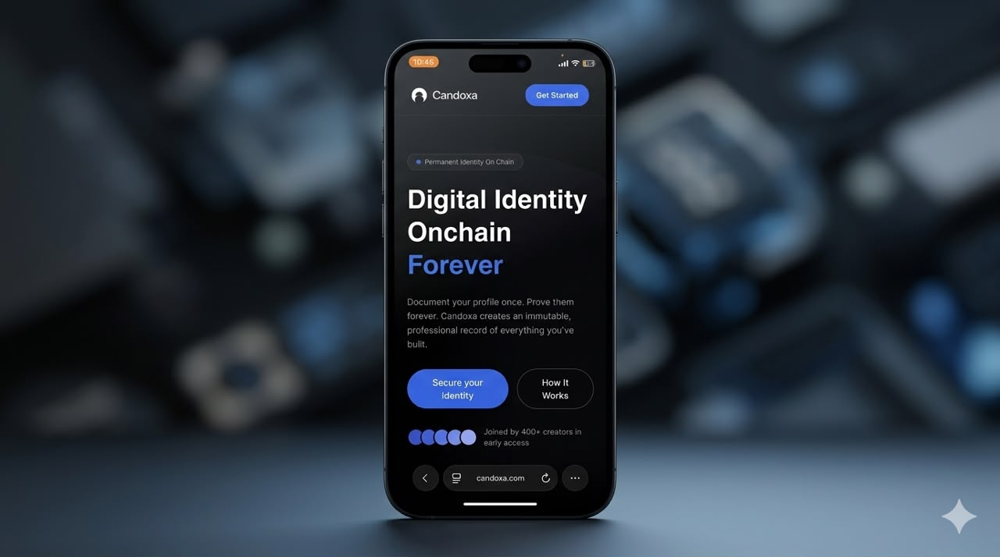
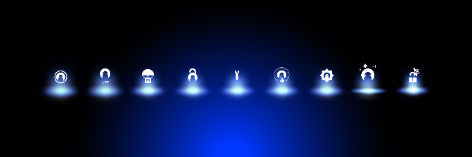
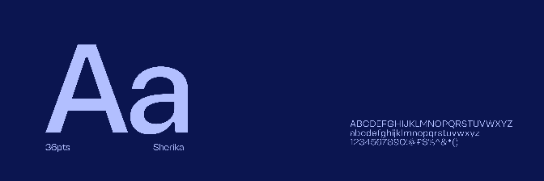
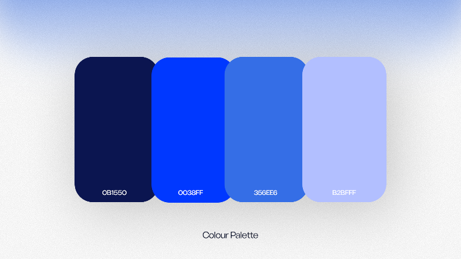
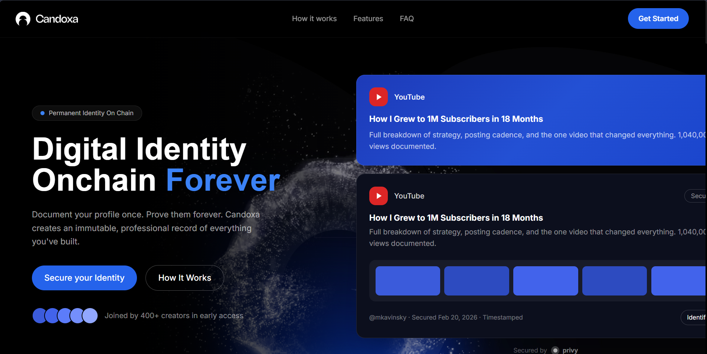
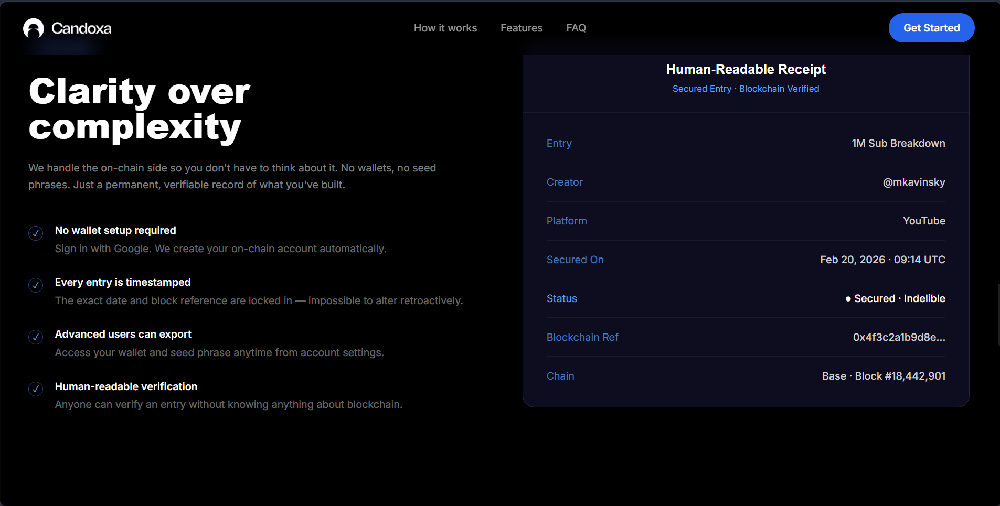
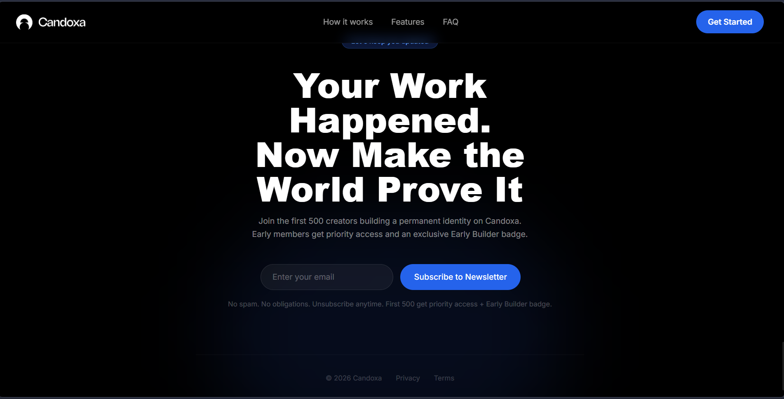
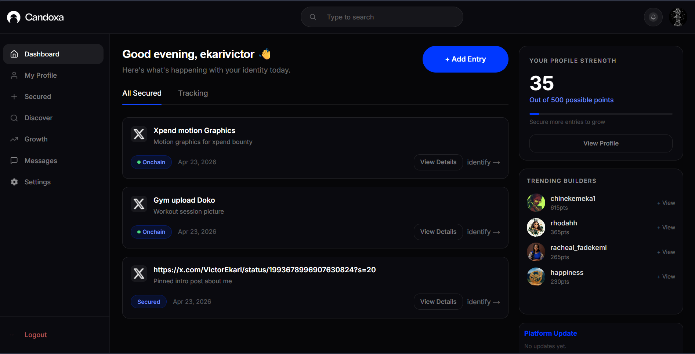
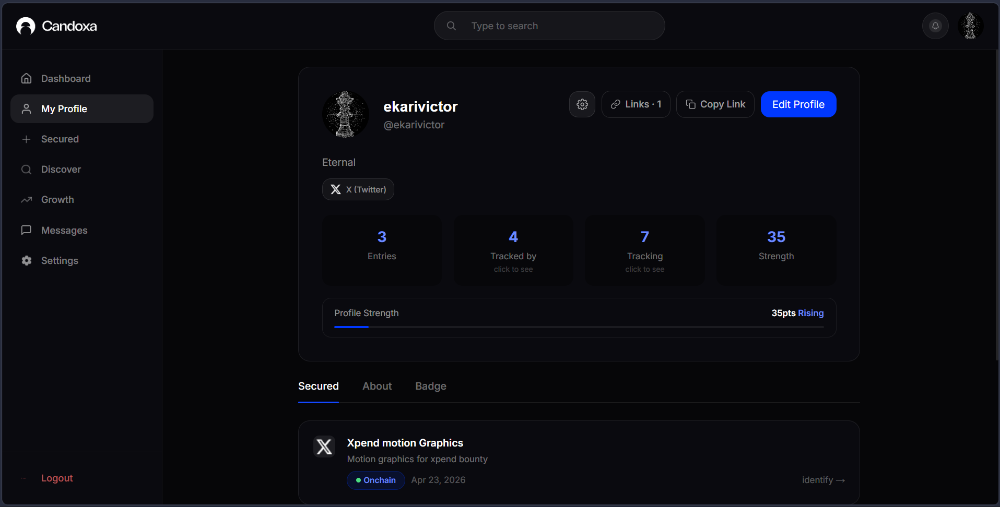

Candoxa
The product worked. What it needed was a face. A motion language and UI that could communicate a concept this technical without losing the creator audience it was built for. That's where I came in.

The Intro
UDE Sports Management Limited is a Nigerian football scouting organisation with serious ambitions. They sit at the intersection of local talent and global clubs identifying players, managing careers, and brokering the kind of opportunities that change lives. But their digital presence didn't reflect any of that weight. The brand needed to catch up to the vision.
The brief covered everything: brand identity, a token-driven design system, brand guidelines documentation, a reference website, and an admin dashboard for internal operations. It was a full-stack brand build, and it needed to feel authoritative from the first pixel.
The Challenge
Blockchain products carry a reputation problem. They tend to look cold, technical, and exclusionary - built for people who already understand them, not the creators, founders, and operators they're trying to reach. Candoxa needed to break that pattern entirely.
The design challenge had two layers. First: make the interface feel intuitive and trustworthy for a non-crypto audience. Second: build a motion language that could carry the weight of the concept - permanence, verification, immutability - without ever making it feel heavy or inaccessible.
Specific problems on the table:
- Communicating on-chain mechanics to users who don't know what 'on-chain' means.
- Designing UI flows that felt as simple as the product's three-step process promised.
- Building a motion system that felt premium without feeling corporate or cold.
- Creating a visual identity strong enough to stand alongside established Web3 brands.
- Making 'permanence' feel like a feature, not a threat.


Kick Off
The brief was clear from the jump: Candoxa had a great concept and early traction - 400+ creators in early access and a waitlist building fast. What the product needed was a visual and motion language that could carry that momentum into a public launch.
We aligned on a few things early. The aesthetic needed to feel editorial and digital-native without tipping into the over-designed aesthetic that dominates Web3. Think: clean structure, precise motion, confident type. Something that felt like it belonged on a creator's mood board as much as a blockchain whitepaper.
The motion work and UI would need to coexist tightly - every animation had to reinforce the UI logic, not just decorate it. The 'stamping' moment when an entry gets secured to the blockchain became the north star for the whole motion system: satisfying, final, and unmistakably intentional.
The Process
I worked across two parallel tracks: motion and UI.
On the motion side, the first task was developing a system not just individual product showcase. Each showcase explanation needed its own motion signature that still felt like it came from the same place. The result was a restrained, purposeful system: short arcs, decisive snaps, subtle glows that referenced the on-chain timestamp mechanic without leaning into sci-fi tropes.
On the UI side, I worked through the core product flows: onboarding, the entry creation flow (paste link -> add context -> secure), the profile view, the tracking feed, and the human-readable receipt. Every screen had to balance simplicity with credibility - the kind of interface that feels effortless to use but carries obvious depth underneath.
The two tracks fed each other constantly. A UI decision would unlock a motion possibility. A motion constraint would sharpen a layout choice. By the time screens and animations were coming together, they felt like parts of the same thought.
Brand Identity
Candoxa's visual identity was built around one idea: permanence with personality. The brand needed to feel serious enough for founders and researchers, and expressive enough for creators and operators.
Colour & Tone
Deep backgrounds - near-black - give the interface its sense of weight and permanence. Accent colours were used surgically: bright, high-contrast moments that signal action, verification, or success. Nothing decorative. Every colour earns its place by doing a job.
Type & Structure
Typography leans on a tight editorial stack - strong display type for hierarchy, a clean sans-serif for body and UI copy, and monospace for data contexts like blockchain references, timestamps, and entry IDs. The monospace choice was deliberate: it signals precision and truth without requiring the user to know anything about blockchain.
Motion Principles
The motion system is built on three principles: intentional, precise, and final. Animations don't linger. They confirm and exit. The stamping sequence - the moment an entry is locked on-chain - is the hero interaction: a single, satisfying motion that communicates 'this is real, this is permanent, this is yours.'



UI / Screens
The Candoxa UI covers the full product surface: from first landing on the site to having a verified, shareable entry on your permanent profile.
The homepage does the job of converting sceptics. The hero section leads with the concept - 'Digital Identity Onchain Forever' - and the supporting sections walk through the problem, the solution, and the trust layer in a sequence designed to lower resistance and build confidence before a single sign-up click.
The core product flow is three steps by design. Paste your link. Add context and screenshot. Secure to profile. The UI makes each step feel light - no unnecessary fields, no blockchain jargon, no friction that doesn't earn its place. The stamping animation at step three is the payoff: the moment the product delivers on its promise.
The profile view and tracking feed are the retention layer - the part of the product that keeps creators coming back. Entries display in reverse chronological order with platform tags, engagement data, and the human-readable receipt that anyone can verify without understanding the chain underneath.
LESSON 1: Motion Earns Trust
In a product category where skepticism is the default, motion design isn't decoration - it's a credibility signal. The right animation at the right moment tells a user: 'this works, this is real, you can trust it.' On Candoxa, every motion decision was made in service of that outcome.
LESSON 2: Simplicity Is the Product
Candoxa's entire value proposition is that it handles the complex stuff so users don't have to. The design had to embody that promise at every level - three steps, no wallets, no seed phrases, no jargon. Every time we caught ourselves adding complexity, we cut it. The discipline of removal was as important as the work of creation.
LESSON 3: Design for the Non-Believer
The target user isn't someone who already wants a blockchain product. They're a creator who's had their work deleted, a founder who can't port their story, a developer whose contributions go uncredited. The design had to speak to that frustration first, and earn the right to introduce the blockchain solution second. Lead with the pain. Land with the product.



Closer
Candoxa is one of those projects where the concept does half the work - the problem is real, the solution is elegant, and the mission is genuinely worth building toward. My job was to make sure the design matched that ambition.
From the motion system to the UI flows, everything was built to make the product feel as trustworthy and intuitive as the technology behind it deserved. I'm proud of what we put together, and I'm watching closely to see where Candoxa goes next.
Lead Motion Design, UI Design
Ekari Victor
UI Designer
Afeez
UI Designer
Gillian
Enjoyed reading this? Thank you.
This took a bit of work to put together, so if you liked it, I'd really appreciate you sharing it.